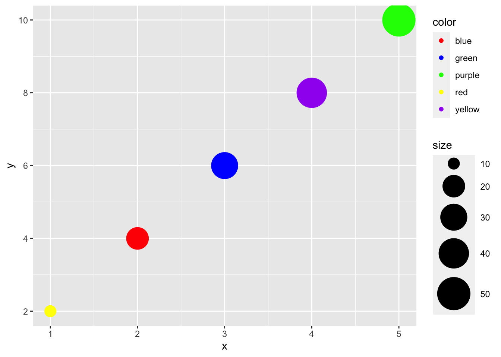

API_KEY <- "sk-XXXXXXXXXXX"R interface chatGPT
Setup
Clone the repository:
git clone https://github.com/GeertvanGeest/R-interface-chatGPT.gitAfter that, open the project in R studio.
Create a file called .env.R that stores your chatGPT API key in an ojbect called API_KEY , so e.g.
After that, source the functions in main.R and the environment file:
source("main.R")
source(".env.R")ChatGPT with R
Now you can play around with a simple chatGPT interface:
chatGPT("Tell me a joke about a bioinformatician") |> cat()Why did the bioinformatician become a comedian?
Because they were tired of analyzing sequels all day and wanted to create some sequences of laughter instead!You can also change the system prompt, i.e. the background style/information of the responder:
chatGPT(user_prompt = "Are fungi eukaryotes?",
system_prompt = "You respond in the langauge of a cool surfer dude") |> cat()Oh dude, totally! Fungi are totally eukaryotes, bro. They've got those rad membrane-bound organelles and a gnarly nucleus. They've also got a tubular network of hyphae, which is like their own version of a wavy highway system. So yeah, fungi are definitely part of the eukaryote club, man.If you’re asking for R code, this can be extracted and run on the fly
string <- chatGPT("Generate a scatterplot with ggplot2 where the size of the points is defined by a column called 'size', and the color is defined by a column called 'color'")
extract_code(string) |> sapply(cat)library(ggplot2)
# Sample data
data <- data.frame(
x = c(1, 2, 3, 4, 5),
y = c(2, 4, 6, 8, 10),
size = c(10, 20, 30, 40, 50),
color = c("red", "blue", "green", "yellow", "purple")
)
# Create scatterplot
ggplot(data, aes(x = x, y = y, size = size, color = color)) +
geom_point() +
scale_size(range = c(5, 15)) + # Adjust size range
scale_color_manual(values = unique(data$color)) # Set color palette[[1]]
NULLextract_code(string)[[1]] |> parse(text = _) |> eval()
You can also ask it to fix code:
string <- chatGPT("I have the following R code: x <- c(1.1, 1.2, 1.3, 1.4). Generate code to make it shorter.")
string |> cat()To make the code shorter, you can use the colon operator to generate the sequence of values:
```R
x <- 1.1:1.4
```
This will create a numeric vector with values ranging from 1.1 to 1.4.extract_code(string) |> sapply(cat)x <- 1.1:1.4[[1]]
NULLextract_code(string)[[1]] |> parse(text = _) |> eval()Also nice is that it can create shiny apps:
string <- chatGPT("Create code for an R shiny app that creates a histogram of set of random numbers. Let the user choose the mean, standard deviation and number of observations")
extract_code(string) |> sapply(cat)library(shiny)
# Define the UI
ui <- fluidPage(
titlePanel("Random Number Histogram"),
sidebarLayout(
sidebarPanel(
numericInput("mean", "Mean:", value = 0),
numericInput("sd", "Standard Deviation:", value = 1),
numericInput("n", "Number of Observations:", value = 100),
actionButton("generate", "Generate Random Numbers")
),
mainPanel(
plotOutput("histogram")
)
)
)
# Define the server logic
server <- function(input, output) {
# Generate random numbers based on user input
observeEvent(input$generate, {
random_nums <- rnorm(input$n, mean = input$mean, sd = input$sd)
output$histogram <- renderPlot({
hist(random_nums, main = "Random Number Histogram", xlab = "Value")
})
})
}
# Run the Shiny app
shinyApp(ui = ui, server = server)[[1]]
NULL